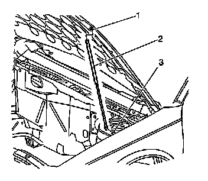
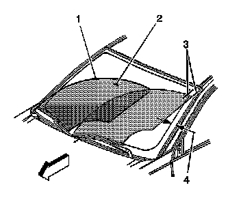

Windshield Wiper Arm Replacement
Windshield Wiper Arm Replacement
Tools Required
J 39822 Wiper Arm Puller
Removal Procedure

1. Set the wipers in the Park position.
2. Open the hood assembly.
3. The driver side wiper (4) aligns with an orange line at the tip of the wiper blade located at the center lower windshield.
4. The passenger side wiper (1) aligns with an orange dot at the tip of the wiper blade located on the right lower side of the windshield.
5. Remove the covers (2, 5) from the wiper arm nuts (3, 6).
6. Remove the nut (3, 6) from the wiper arm drive spindle.

Notice: Apply pressure only at the end of the liftgate/hood assist rod that you are removing or attaching. Do NOT apply pressure to the middle of the rod because damage or bending will result.
7. Remove the upper hood assist rods from the assist rod ball studs (1) if removing the driver side wiper arm.
8. Tilt the hood rearward to the air inlet grille panel.
9. Support the hood assembly.
Important: Use the J 39822 in order to remove the wiper arm if the wiper arm fails to loosen from the wiper arm drive spindle.
10. Remove the wiper arm from the wiper arm drive spindle.
11. Clean the drive spindle knurls with a fine wire brush.
12. Remove the wiper blade from the wiper arm. Refer to Windshield Wiper Blade Replacement (Windshield Wiper Blade Replacement) .
Installation Procedure
1. Install the wiper blade onto the wiper arm. Refer to Windshield Wiper Blade Replacement (Windshield Wiper Blade Replacement) .
2. Position the passenger side wiper arm so the wiper blade tip (1) aligns with the orange dot on the lower outer edge of the windshield.
3. Position the driver side wiper arm so that the wiper blade tip (4) aligns with the orange line on the lower center of the windshield.
4. Install the wiper arm onto the wiper arm drive spindle.
Notice: Refer to Fastener Notice (Fastener Notice) .
Important: Hold the wiper arm into position while tightening the nut.
5. Install the nut (3, 6) on the wiper arm.
Tighten the nut to 35 N.m (26 lb ft).
6. Secure the upper hood assist rods onto the assist rod ball studs (1) located on the hood assembly.
7. Install the wiper arm nut covers.
8. Close the hood assembly.

9. Operate the wipers and wash pattern (2) in order to verify the operation.
10. Verify the driver side wiper does not exceed the wipe area (3).